| 日付 | 2021年2月15日（月） - 2021年2月20日（土） | ||||||
|---|---|---|---|---|---|---|---|
| 山域 | 近畿の山 | ||||||
| メンバー | 単独 | ||||||
| 山行形態 | 5泊6日車中、避難小屋泊 | ||||||
| アクセス | 車 | ||||||
| ルート |
|
5日目
駐車場を雪かきする音で目が覚める。
相当気温は低そうだが、シュラフ2枚重ねで全く寒くなかった。
外に出ると見事な快晴が広がっている。
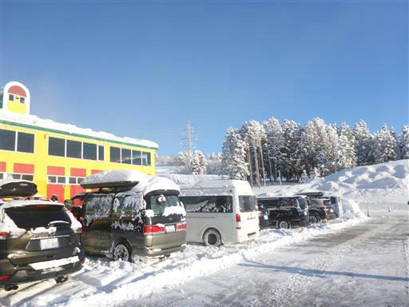
建物はポップな色合いだ。
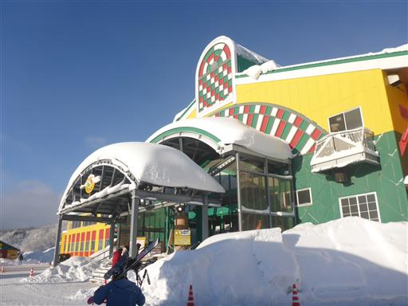
早速リフトに乗ってスキー開始。
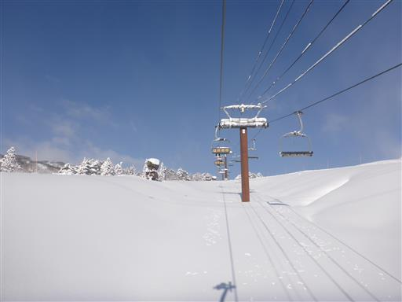
昨日あれだけ雪が降っていたのに、降雪マシーンが動いている。
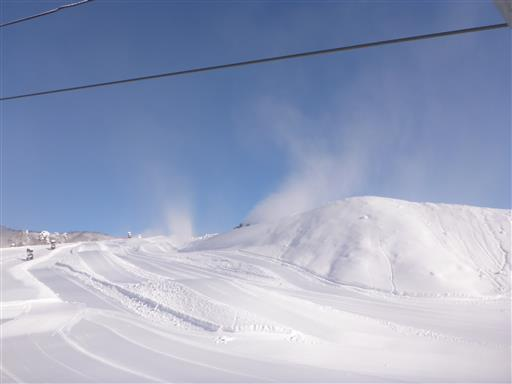
オープン当初はゴンドラが動いていなかったが、途中でゴンドラが動き出す。
簡易的な椅子しかなく多くの人を輸送できる効率的なゴンドラだ。
マスク着用していない人は乗車を拒否するなど、対策は徹底している。
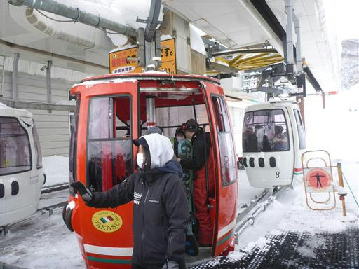
非圧接エリアに挑戦してみたら、転んで雪に埋もれてしまった。
雪に沈んだスキー板を取り出すのも、外れたスキー板を履くのも無理で、何とか這い出す。
雪に埋もれた女子が誰かに助けてもらっている。
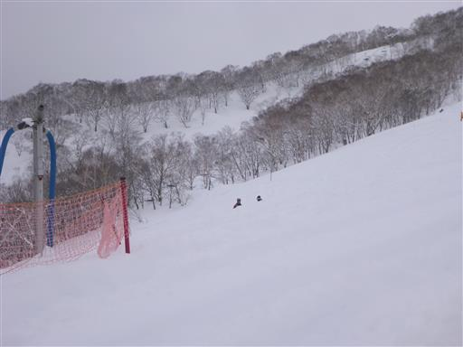
朝は青空が見えていたが、途中から雲に覆われどんよりとしてくる。
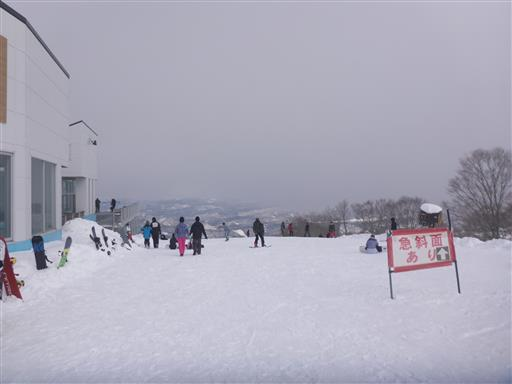
昼食前後の3時間はレッスン。パラレルターンのいろはを教えてもらう。
レッスン後は自主練習。
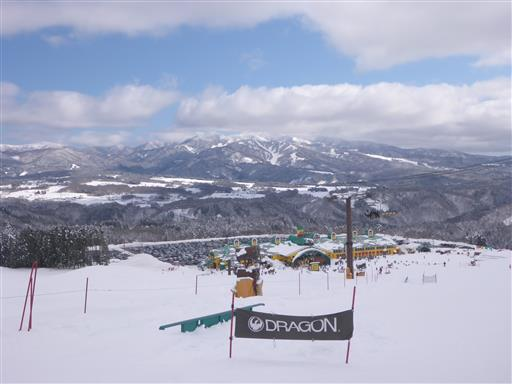
夕方になり、雲が消えて青空が広がってきた。
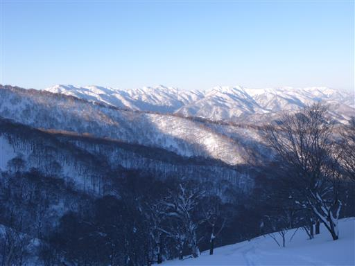
展望台に登ってみる。ようやく絶景が広がる。
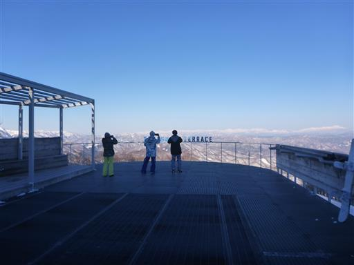
乗鞍岳。
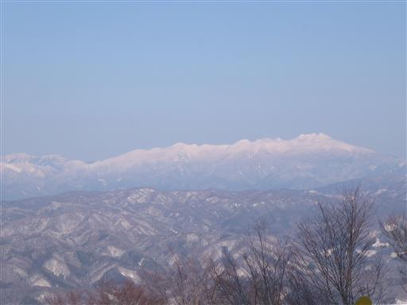
御嶽山。
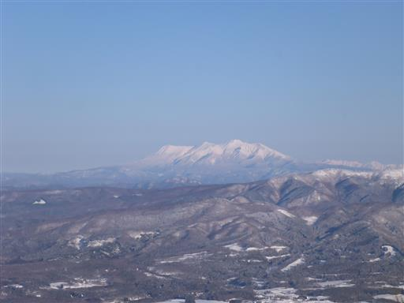
西側から眺める北アルプスの山々。晴れれば絶景のスキー場だ。
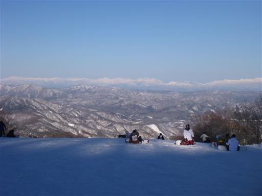
最後の滑走を終える。日はだいぶ傾いてきた。
これで今シーズンのスキーはお終いだろう。来年まで忘れないようにしないといけない。
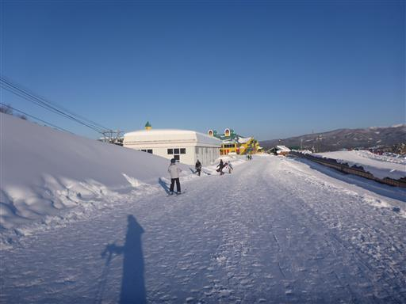
スキーからの帰りに湯の平温泉に立ち寄る。
高鷲スノーパークは高速道路ICと近いスキー場で、
間にめぼしい温泉施設は少ないため、スノボ客と思われる若者で大混雑。
コロナのこともあり全く落ち着かないので、さっと入浴を済ませる。
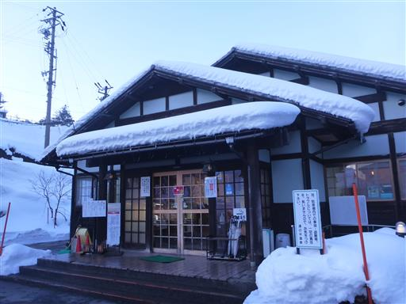
本日はサービスエリアで宿泊予定。
しかし、高速道路を走れども走れども、サービスエリアは見つからない。
130km走って、ようやく新東名の岡崎SAに辿り着く。
時刻は19:45で多くの飲食店は閉店。コロナの影響か？
帰省時によく寄るSAのため、あまり旅行気分を味わえない。
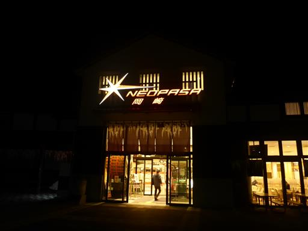
6日目
朝はしっかり営業している。パン屋でパンを買って、車で食べて出発。
昼前には帰宅することができた。
海外に行くことができず、夏山に行くこともできず、2月という最悪な時期に
旅行せざるを得なかった今回の旅行だが、何とか自分らしい登山ができた。
強力してくれた家族に感謝だ。
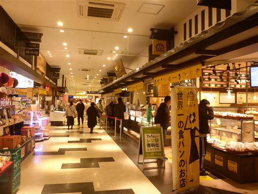